Hi,I'm Laura Lewis.A Portrait Photographer based in New York.
a storyteller with a camera. For me, photography is more than just taking pictures; it’s about capturing real emotions, quiet in-between moments, and the beauty of everyday life I’m drawn to natural light, candid expressions, and the magic that unfolds when people are simply themselves. Whether I’m photographing portraits, travel scenes, or lifestyle moments, my goal is always the same: to freeze time in a way that feels honest, warm, and timeless.
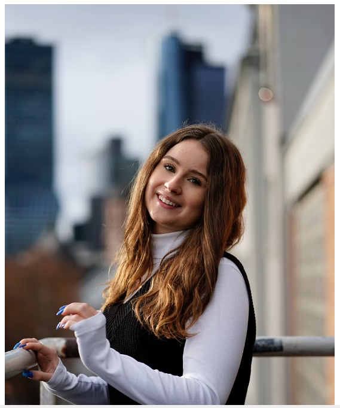
Gellery


 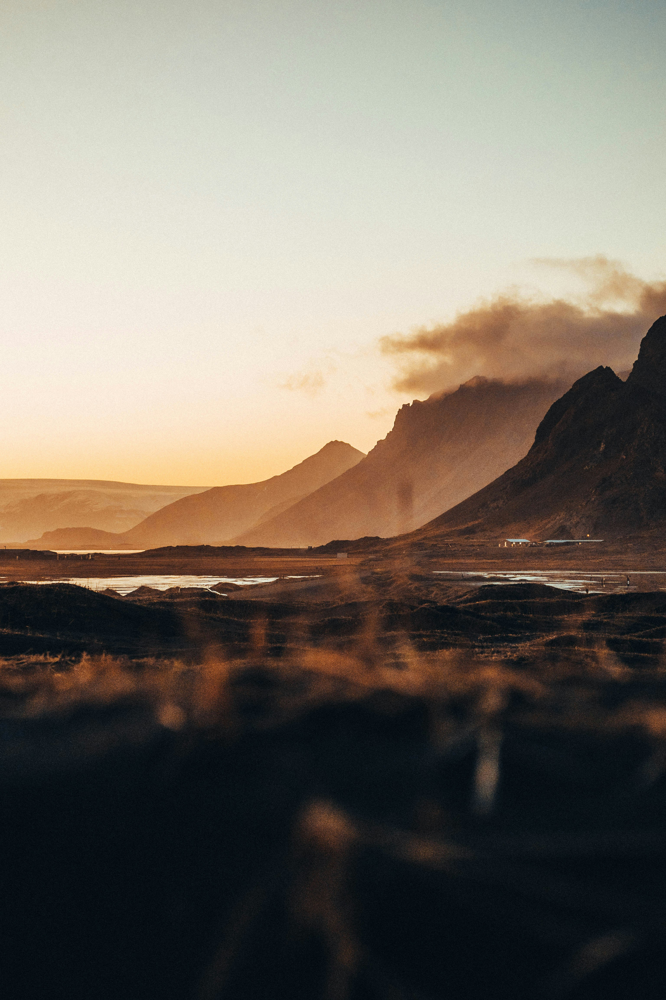
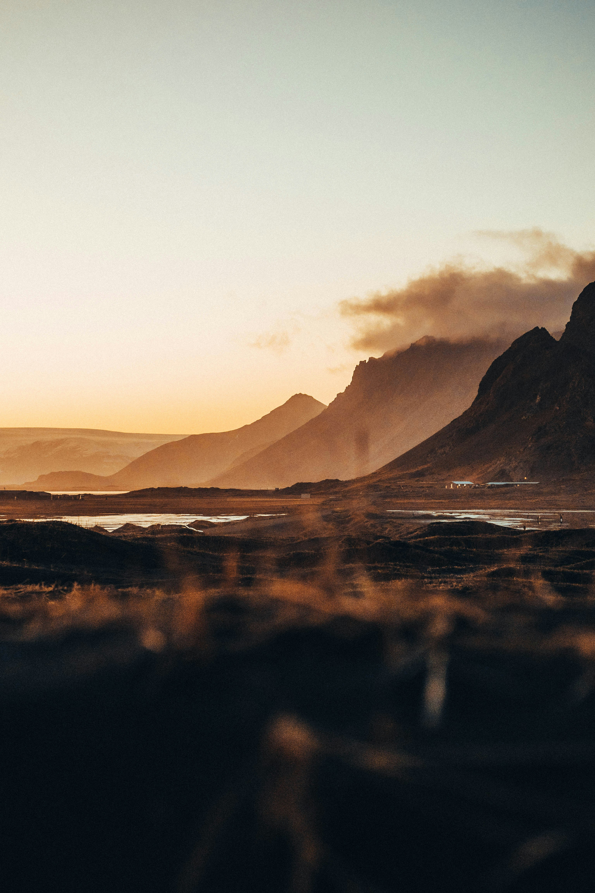

 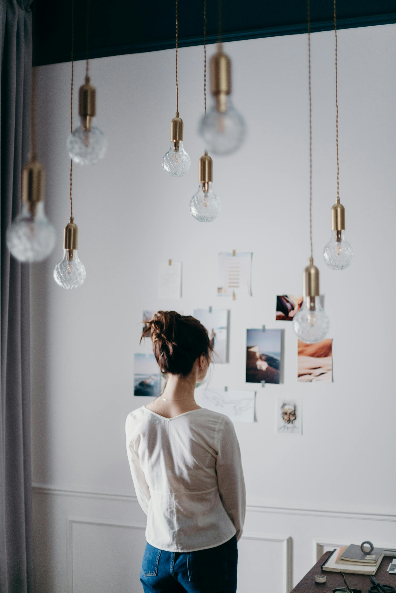
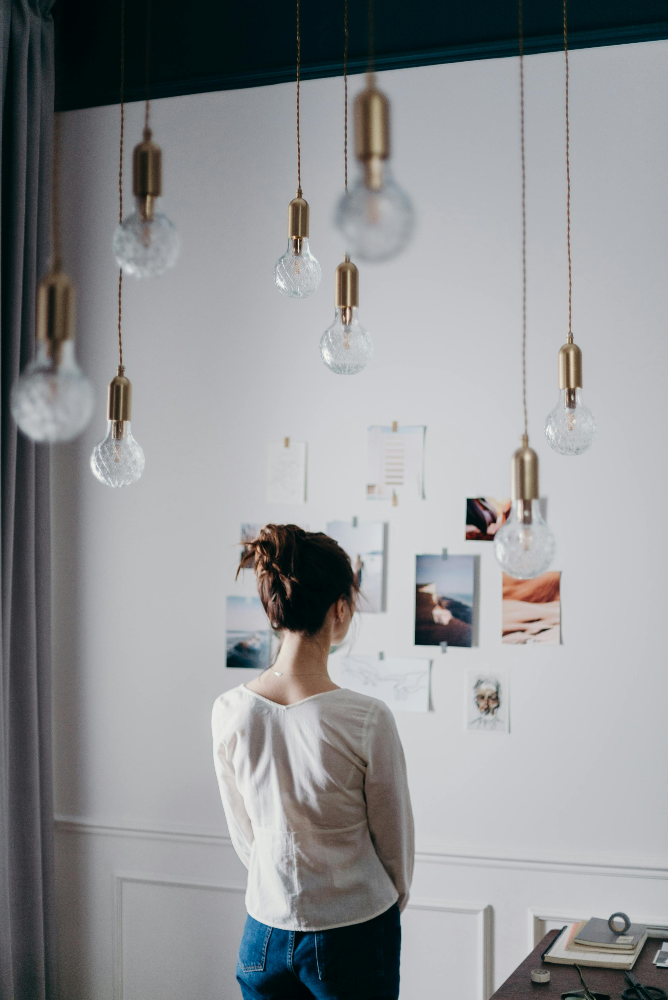

 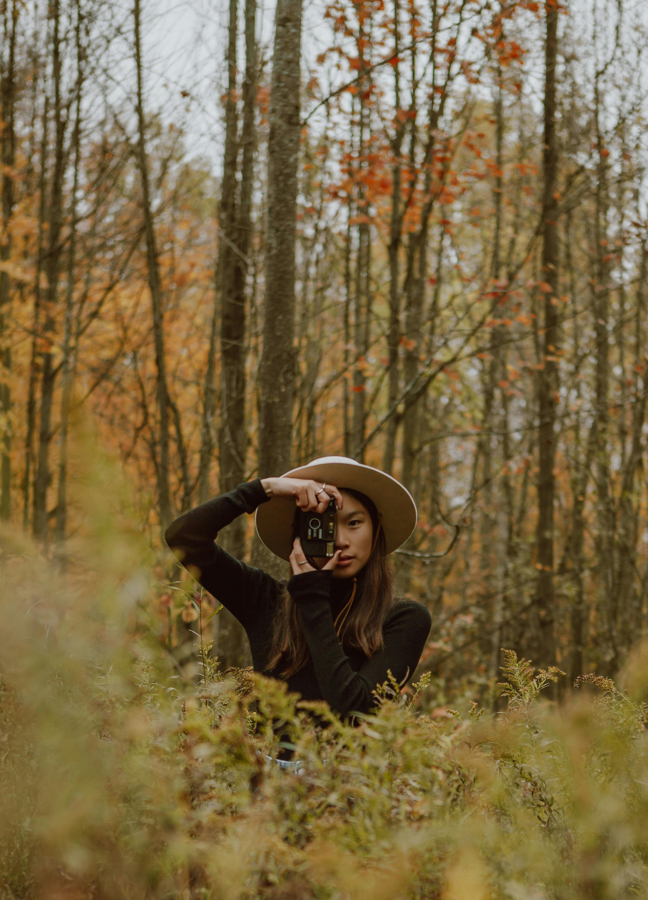
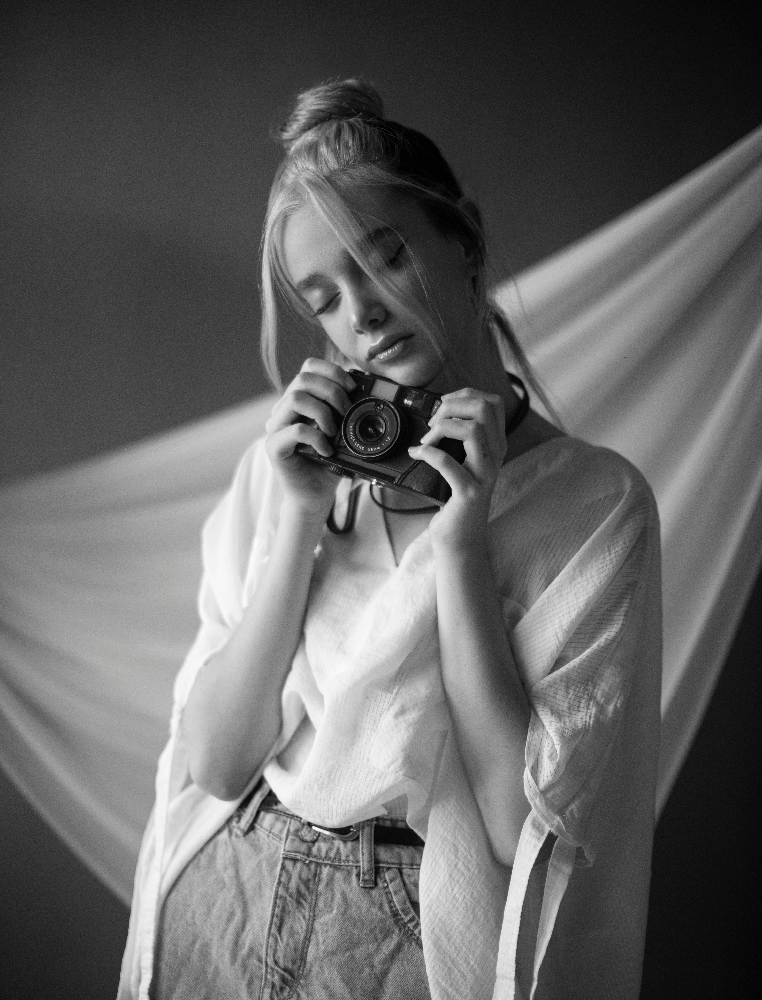
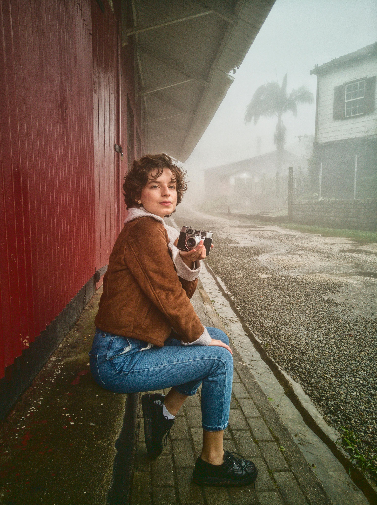
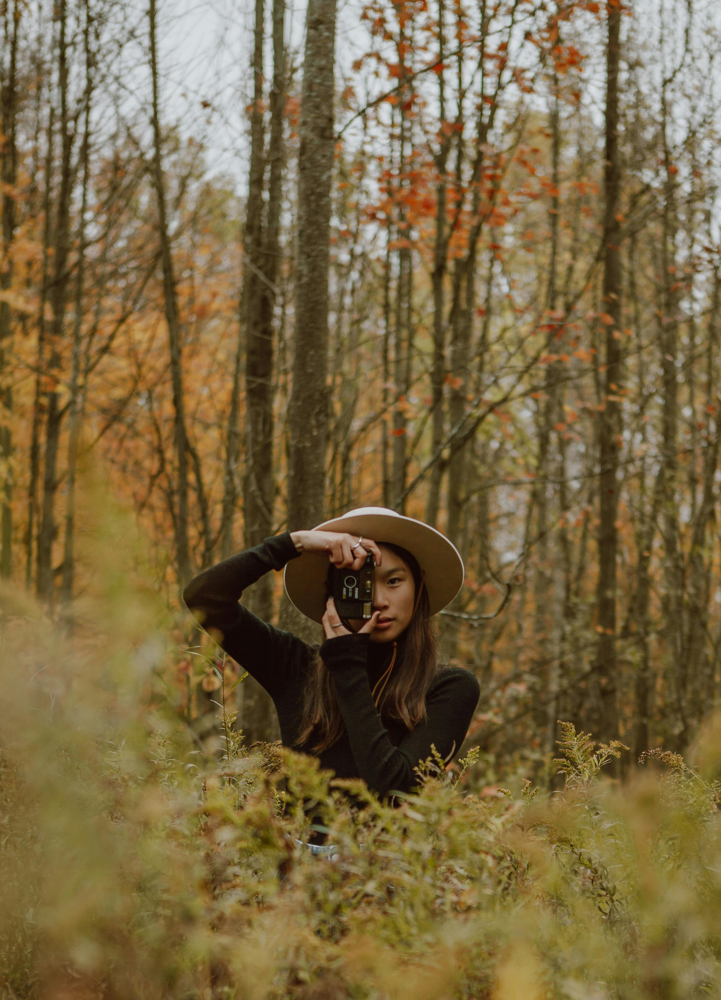
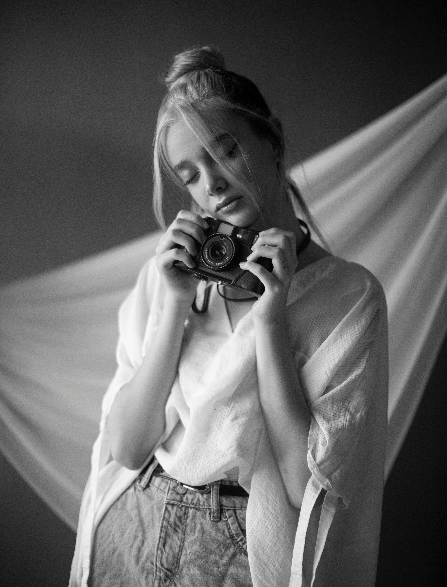
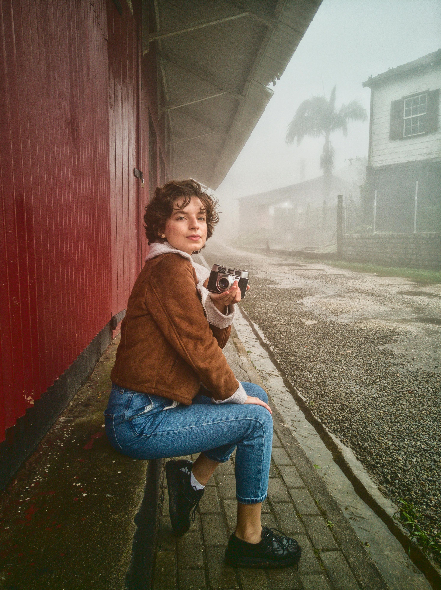